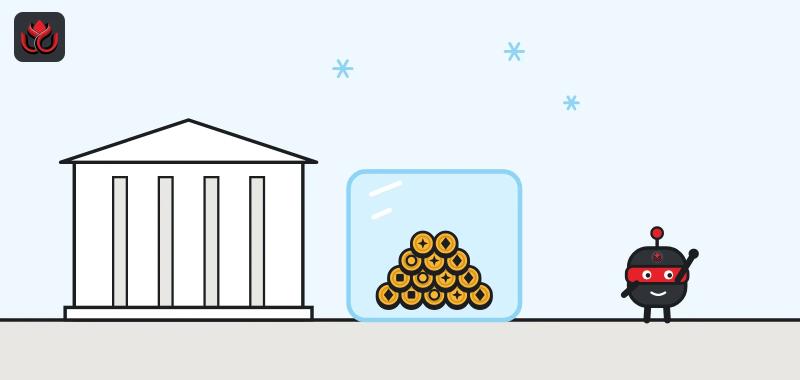
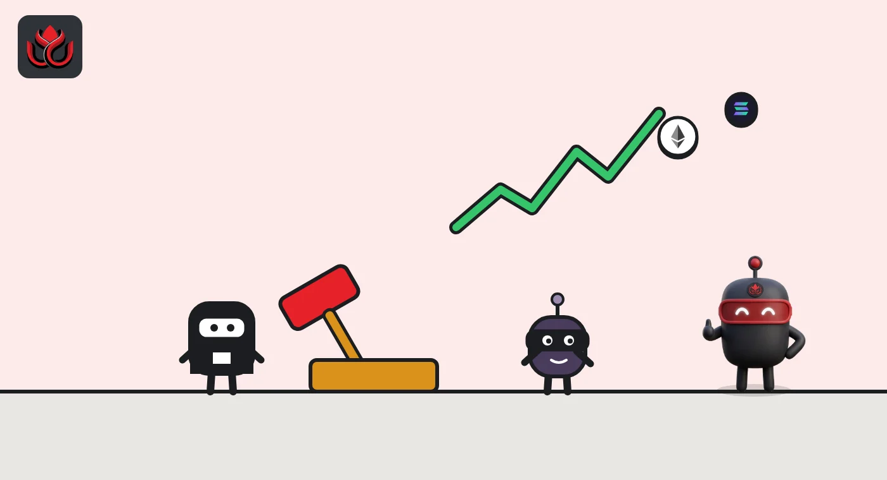
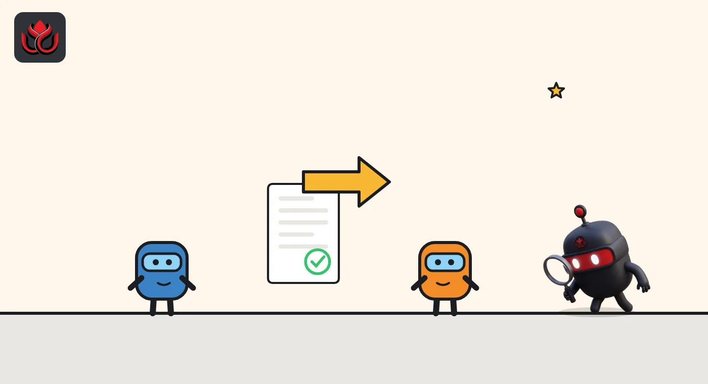

South Korea crypto rules explained: cold wallets, bank-held cash and jail terms
Crypto exchanges in South Korea must register with the Financial Intelligence Unit and, since July 19, 2024, follow the Virtual Asset User Protection Act: customer cash held at banks, most coins in cold wallets, and prison terms for market manipulation.

Key points
- Since March 2021, crypto businesses have had to register with the financial authorities under Korea's anti-money laundering law.
- The Virtual Asset User Protection Act took effect on July 19, 2024. It requires customer cash to be held at banks, customer coins to be kept separate, and insurance or reserves against hacks.
- Unfair trading such as price manipulation carries at least one year in prison or a fine of three to five times the illegal profit.
- In the first half of 2026, 26 registered providers operated in Korea: 17 exchanges and 9 custody and wallet firms.
Who regulates crypto in South Korea?
Three bodies share the job. The Financial Services Commission (FSC) makes policy and can impose sanctions. The Financial Supervisory Service (FSS) inspects firms. The Korea Financial Intelligence Unit (KoFIU), part of the FSC, handles anti-money laundering and registration.
Korea calls crypto businesses virtual asset service providers, or VASPs. They have been regulated under the revised Act on Reporting and Using Specified Financial Transaction Information since March 2021, which made them register with the financial authorities, the FSC said.
What does the Virtual Asset User Protection Act require?
The National Assembly passed the Act on the Protection of Virtual Asset Users on June 30, 2023, combining 19 pending bills, according to the FSC. It took effect on July 19, 2024, the FSC confirmed. Its core duties for VASPs are:
- Customer cash at banks: customers' deposits must be kept separately and held at banks, and VASPs must pay customers a fee for using that money, similar to interest.
- Coins held one-for-one: customer coins must be kept apart from the firm's own, and the firm must actually hold the types and amounts customers own.
- Hack cover: VASPs must buy insurance or set aside reserves against hacks and system failures.
- Surveillance: exchanges must monitor trading at all times and report suspicious activity to the FSS immediately.
- Records: transaction records must be kept for 15 years.
The FSS inspects firms for compliance, and the FSC can issue corrective orders, suspend business and impose fines.

How did Korea prepare for the law?
The Act was more than two years in the making. A private-public task force on digital assets started in August 2022, and a parliamentary subcommittee decided in April 2023 to enact the minimum necessary rules first, the FSC said.
Ahead of the July 2024 start, the FSS published a roadmap and ran on-site consultations with exchanges from February 2024, and began a pilot test in June 2024 to check whether regulators and firms were ready, according to the FSC. Twenty exchange operators, through their industry group DAXA, drew up best-practice guidelines, and a mandatory insurance product for exchanges was launched before the law took effect.
The enforcement rules also define what is not a virtual asset. The Act already excluded game money, electronic money, electronic stocks and central bank digital currency. The FSC's December 2023 proposal added electronic bonds, mobile gift certificates, deposit tokens linked to a central bank digital currency, and NFTs to that list.
How much must sit in cold wallets?
A cold wallet is storage kept offline, away from internet hacks. The Enforcement Decree the government approved on June 25, 2024, which took effect with the Act on July 19, 2024, requires VASPs to keep more than 80% of customers' coins in cold wallets, with the exact level set by the FSC. The FSC can also order a higher ratio for a specific firm if it sees risks such as hacking or a business closure.
For hack insurance or reserves, the FSC's December 2023 proposal suggested at least 5% of the customer coins held in hot (online) wallets, with a floor of KRW 3 billion for exchanges that trade against the Korean won and KRW 500 million for other VASPs. Those figures come from the proposal. LC Insight could not confirm from the FSC's English releases whether the final supervisory rules kept them.
Under the final decree, exchanges may block deposits and withdrawals only on reasonable grounds: a network error or system maintenance, a demand from an authority such as the tax office, or funds linked to illegal proceeds. Each suspension can last two months, up to six months in total.
Minimum hack insurance or reserves in Korea's December 2023 proposal
KRW billion
Source: FSC, proposed rules on the protection of virtual asset users (December 11, 2023).

What are the penalties for market manipulation?
The Act bans trading on undisclosed material information, price manipulation and fraudulent trading such as false reporting. It also restricts VASPs from trading tokens they issued themselves.
Offenders face at least one year in prison or a fine of three to five times their unfair profit, and the gains are confiscated, according to the FSC.
The rules also set when news counts as public. Under the final Enforcement Decree, information becomes public six hours after it is posted on a virtual asset exchange, or one day after it appears on the issuer's website. The decree also sets tougher terms for big gains: at least three years in prison when unfair profit is KRW 500 million to KRW 5 billion, and five years to life above KRW 5 billion.
How does the Travel Rule work in Korea?
The Travel Rule requires exchanges to pass sender and receiver details along with transfers. In Korea it currently applies to transfers worth KRW 1 million or more between domestic VASPs, KoFIU said in its 2026 policy agenda on February 5, 2026.
KoFIU plans to extend it to smaller transfers. Transfers between a Korean exchange and a personal wallet or a foreign provider would be allowed only where the sender and receiver are the same person. Stablecoin issuers would also take on anti-money laundering duties like those of financial companies, ahead of planned stablecoin rules. A FATF evaluation of Korea is scheduled for March 2028.
How big is Korea's crypto market?
KoFIU's survey for the first half of 2026 covered 26 registered providers: 17 exchanges and 9 custody and wallet firms, the FSC said on October 1, 2026. Average daily trading volume fell 44% from the previous half, and the number of listed tokens fell to 673 from 712 at the end of 2025.
LC Insight broke down those results in Korea's crypto exchanges lost a third of their market in six months.
Policy is still moving. The FSC's press release list shows a rules change approved on August 11, 2026, to strengthen VASP registration and anti-money laundering requirements, and a proposal on October 1, 2026 to allow tokenized securities.
What should users check?
The FSC has been blunt about the limits of the law. It said the Act does not guarantee the safety of virtual assets, and that prices are highly risky and volatile, in its July 2024 notice.
It also warned that unregistered providers and over-the-counter or peer-to-peer trades lack proper market surveillance. The FSC asked users to report suspicious trading to the FSS and suspected fraud to investigators.
One more protection sits in the deposit rules. Banks that hold exchange customers' cash must invest it in risk-free assets such as national and local government bonds, and return it directly to customers if a VASP goes bankrupt, under the Enforcement Decree.
LC Insight analysis
This section is our reading of the facts above, not a statement of fact.
- We think Korea's model is one of the strictest for exchanges in Asia. Bank-held cash, a cold wallet floor above 80% and stock-market-style penalties make it costly to run an exchange but safer to use one.
- The next pressure point is stablecoins. KoFIU is already writing anti-money laundering duties for issuers ahead of stablecoin rules, which suggests a separate framework is coming.
- The real risk for users sits outside the system. The FSC has warned that unregistered providers and over-the-counter or peer-to-peer trades lack proper market surveillance.
What's next
- Stablecoin legislation and the issuer rules KoFIU is preparing
- Extension of the Travel Rule to transfers under KRW 1 million
- Final rules on tokenized securities proposed on October 1, 2026
Frequently asked questions
Do Korean crypto exchanges pay interest on cash deposits?
Under the Virtual Asset User Protection Act, customer cash is held at banks and exchanges must pay customers a usage fee on it, similar to interest.
How many crypto exchanges are registered in South Korea?
KoFIU's survey for the first half of 2026 counted 17 registered exchange operators, plus 9 custody and wallet providers.
What is the penalty for crypto market manipulation in Korea?
At least one year in prison or a fine of three to five times the unfair profit, with gains confiscated.
Can Korean exchanges freeze withdrawals?
Only on reasonable grounds set in the 2024 Enforcement Decree, such as a network error or system maintenance, a demand from an authority, or funds linked to illegal proceeds. Each suspension can last two months, up to six months in total.
Disclaimer. This article is based on public information and the sources listed below as of the update time shown. It is for information only and is not investment, legal or tax advice. Figures may change as companies and authorities publish new data.
Sources
- FSC, Government to Ensure Virtual Asset User Protection (June 30, 2023)
- FSC, The Act on the Protection of Virtual Asset Users to Take Effect from July 19 (July 17, 2024)
- FSC, Proposes Rules on the Protection of Virtual Asset Users (December 11, 2023)
- FSC, KoFIU Announces AML/CFT Policy Agendas for 2026 (February 5, 2026)
- FSC, KoFIU Unveils H1 2026 Survey Result on VASPs (October 1, 2026)
- FSC, press release list
- FSC, New Enforcement Decree on the Protection of Virtual Asset Users Approved by the Government (June 25, 2024)